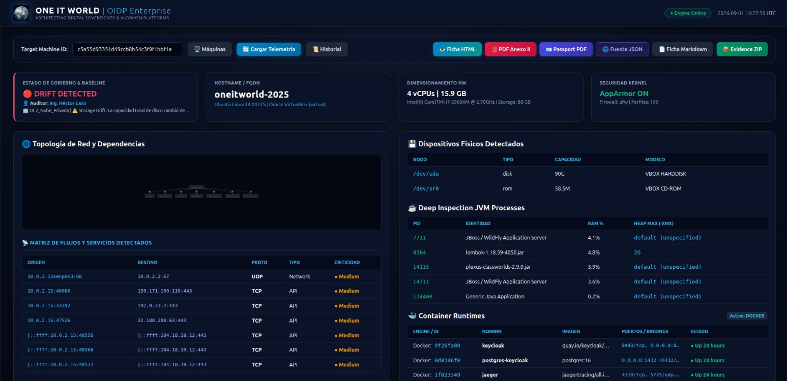

Discovery & CMDB para migraciones críticas
Descubre, certifica y entrega evidencia firmada de cada máquina que migras — sin instalar nada, sin degradar el servicio, y sin depender de que alguien actualice un documento a mano.
El producto
Panel real de OIDP Enterprise: estado de gobierno, topología de dependencias, y los formatos de evidencia listos para exportar en un clic.

Cómo funciona
Diseñado para producción crítica: nada se instala, nada se degrada, todo queda firmado.
Solo comandos ya presentes en el sistema operativo. Cero agentes, cero instalación, cero degradación medible.
Cada corrida es una fotografía de la máquina, comparada automáticamente contra su línea base.
Cada archivo lleva su propia firma SHA-256. Cualquier alteración se detecta al instante.
Un mismo snapshot se convierte en ficha HTML ejecutiva, Markdown técnico con diagramas, y JSON auditable.
Profundidad técnica
El mismo nivel de detalle que hoy exige un anexo técnico de migración — generado por script, no a mano.
La diferencia
La mayoría de las herramientas de discovery piden instalar un agente. En producción crítica, eso no siempre es una opción.
De cero a certificado
Cuatro pasos, del primer script al bundle de evidencia listo para auditoría.
Se ejecuta el script por línea de comandos; no requiere instalación ni acceso persistente.
El agente temporal lee la configuración con comandos nativos y genera el JSON firmado.
El snapshot se compara contra la línea base; se calcula el DREV con el veredicto cumple / no cumple.
Se genera el bundle de evidencia — cinco archivos firmados, listos para auditoría o pago.
Programa de acceso anticipado
La herramienta ya recolecta, compara y certifica. Lo que falta es un caso real que la ponga a prueba — y quien entre ahora ayuda a definir cómo se certifica esta categoría.